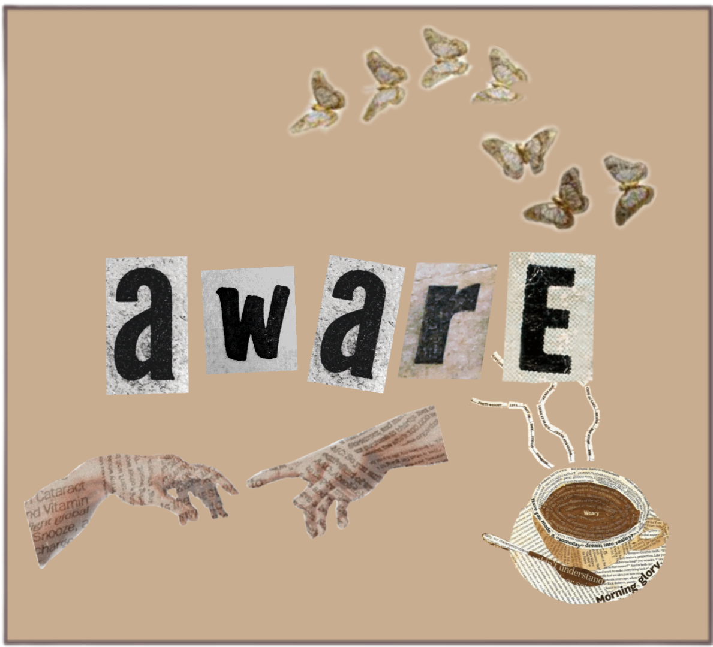
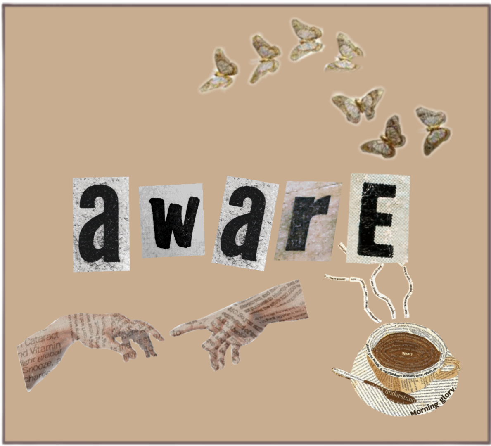

One of the ways to prevent yourself from being infected is to be aware and spread awareness.
Being aware includes buying needed medical supplies (masks, alcohol,
face shields, etc.)
Older people, and those with underlying medical problems like cardiovascular disease, diabetes, chronic respiratory disease,
and cancer are more
likely to develop this serious virus. Most people who fall sick with this virus could experience mild to moderate symptoms, respiratory illness and recover without
requiring special treatment.
Symptopms: How will you know that you already have
Coronavirus? There's a common, less common, and serious symptom.
Common Symptoms:
- Fever, Dry cough, Fatigue, Shortness of breath, Loss of appetite, Confusion,
Persistent pain or pressure in the chest, and High temperature (above 38 °C).
Less Common Symptoms And May Affect Some Patients:
- Loss of taste or smell, Nasal congestion, Conjunctivitis (also known as red eyes),
Sore throat, Headache, Muscle or joint pain, Different types of skin rash,Nausea or vomiting,
Diarrhea, and Chills or dizziness. Irritability, Confusion, Reduced consciousness (sometimes
associated with seizures), Anxiety, Depression, Sleep disorders, and More severe and rare neurological
complications such as strokes, brain inflammation, delirium and nerve damage.
Severe Symptoms
The virus that causes COVID-19 is mainly transmitted
through droplets generated when an infected person coughs, sneezes, or exhales. These droplets
are too heavy to hang in the air, and quickly fall on floors or surfaces. You can be infected by
breathing in the virus if you are within close proximity of someone who has COVID-19, or by touching a
contaminated surface and then your eyes, nose or mouth.

 Home
About Us
Our Team
Contact Us
Home
About Us
Our Team
Contact Us
 
